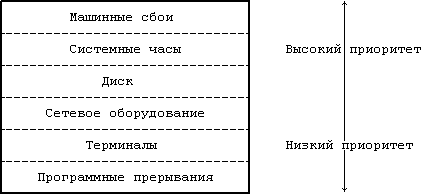

Выполнение пользовательских процессов в системе UNIX осуществляется на двух уровнях: уровне пользователя и уровне ядра. Когда процесс производит обращение к операционной системе, режим выполнения процесса переключается с режима задачи (пользовательского) на режим ядра: операционная система пытается обслужить запрос пользователя, возвращая код ошибки в случае неудачного завершения операции. Даже если пользователь не нуждается в каких-либо определенных услугах операционной системы и не обращается к ней с запросами, система еще выполняет учетные операции, связанные с пользовательским процессом, обрабатывает прерывания, планирует процессы, управляет распределением памяти и т.д. Большинство вычислительных систем разнообразной архитектуры (и соответствующие им операционные системы) поддерживают большее число уровней, чем указано здесь, однако уже двух режимов, режима задачи и режима ядра, вполне достаточно для системы UNIX.
Основные различия между этими двумя режимами:
- В режиме задачи процессы имеют доступ только к своим собственным инструкциям и данным, но не к инструкциям и данным ядра (либо других процессов). Однако в режиме ядра процессам уже доступны адресные пространства ядра и пользователей. Например, виртуальное адресное пространство процесса может быть поделено на адреса, доступные только в режиме ядра, и на адреса, доступные в любом режиме.
- Некоторые машинные команды являются привилегированными и вызывают возникновение ошибок при попытке их использования в режиме задачи. Например, в машинном языке может быть команда, управляющая регистром состояния процессора; процессам, выполняющимся в режиме задачи, она недоступна.
| Процессы |
|---|
| A | B | C | D |
|---|
| Режим ядра | Я | . | . | Я |
|---|
| Режим задачи | . | З | З | . |
|---|
Рисунок 1.5. Процессы и режимы их выполнения
Проще говоря, любое взаимодействие с аппаратурой описывается в терминах режима ядра и режима задачи и протекает одинаково для всех пользовательских программ, выполняющихся в этих режимах. Операционная система хранит внутренние записи о каждом процессе, выполняющемся в системе. На Рисунке 1.5 показано это разделение: ядро делит процессы A, B, C и D, расположенные вдоль горизонтальной оси, аппаратные средства вводят различия между режимами выполнения, расположенными по вертикали.
Несмотря на то, что система функционирует в одном из двух режимов, ядро действует от имени пользовательского процесса. Ядро не является какой-то особой совокупностью процессов, выполняющихся параллельно с пользовательскими, оно само выступает составной частью любого пользовательского процесса. Сделанный вывод будет скорее относиться к "ядру", распределяющему ресурсы, или к "ядру", производящему различные операции, и это будет означать, что процесс, выполняемый в режиме ядра, распределяет ресурсы и производит соответствующие операции. Например, командный процессор shell считывает вводной поток с терминала с помощью запроса к операционной системе. Ядро операционной системы, выступая от имени процессора shell, управляет функционированием терминала и передает вводимые символы процессору shell. Shell переходит в режим задачи, анализирует поток символов, введенных пользователем и выполняет заданную последовательность действий, которые могут потребовать выполнения и других системных операций.
Система UNIX позволяет таким устройства, как внешние устройства ввода-вывода и системные часы, асинхронно прерывать работу центрального процессора. По получении сигнала прерывания ядро операционной системы сохраняет свой текущий контекст (застывший образ выполняемого процесса), устанавливает причину прерывания и обрабатывает прерывание. После того, как прерывание будет обработано ядром, прерванный контекст восстановится и работа продолжится так, как будто ничего не случилось. Устройствам обычно приписываются приоритеты в соответствии с очередностью обработки прерываний. В процессе обработки прерываний ядро учитывает их приоритеты и блокирует обслуживание прерывания с низким приоритетом на время обработки прерывания с более высоким приоритетом.
Особые ситуации связаны с возникновением незапланированных событий, вызванных процессом, таких как недопустимая адресация, задание привилегированных команд, деление на ноль и т.д. Они отличаются от прерываний, которые вызываются событиями, внешними по отношению к процессу. Особые ситуации возникают прямо "посредине" выполнения команды, и система, обработав особую ситуацию, пытается перезапустить команду; считается, что прерывания возникают между выполнением двух команд, при этом система после обработки прерывания продолжает выполнение процесса уже начиная со следующей команды. Для обработки прерываний и особых ситуаций в системе UNIX используется один и тот же механизм.
Ядро иногда обязано предупреждать возникновение прерываний во время критических действий, могущих в случае прерывания запортить информацию. Например, во время обработки списка с указателями возникновение прерывания от диска для ядра нежелательно, т.к. при обработке прерывания можно запортить указатели, что можно увидеть на примере в следующей главе. Обычно имеется ряд привилегированных команд, устанавливающих уровень прерывания процессора в слове состояния процессора. Установка уровня прерывания на определенное значение отсекает прерывания этого и более низких уровней, разрешая обработку только прерываний с более высоким приоритетом. На Рисунке 1.6 показана последовательность уровней прерывания. Если ядро игнорирует прерывания от диска, в этом случае игнорируются и все остальные прерывания, кроме прерываний от часов и машинных сбоев.

Рисунок 1.6. Стандартные уровни прерываний
Ядро постоянно располагается в оперативной памяти, наряду с выполняющимся в данный момент процессом (или частью его, по меньшей мере). В процессе компиляции программа-компилятор генерирует последовательность адресов, являющихся адресами переменных и информационных структур, а также адресами инструкций и функций. Компилятор генерирует адреса для виртуальной машины так, словно на физической машине не будет выполняться параллельно с транслируемой ни одна другая программа.
Когда программа запускается на выполнение, ядро выделяет для нее место в оперативной памяти, при этом совпадение виртуальных адресов, сгенерированных компилятором, с физическими адресами совсем необязательно. Ядро, взаимодействуя с аппаратными средствами, транслирует виртуальные адреса в физические, т.е. отображает адреса, сгенерированные компилятором, в физические, машинные адреса. Такое отображение опирается на возможности аппаратных средств, поэтому компоненты системы UNIX, занимающиеся им, являются машинно-зависимыми. Например, отдельные вычислительные машины имеют специальное оборудование для подкачки выгруженных страниц памяти. Главы 6 и 9 посвящены более подробному рассмотрению вопросов, связанных с распределением памяти, и исследованию их соотношения с аппаратными средствами.
Предыдущая глава || Оглавление || Следующая глава
{kind=link}